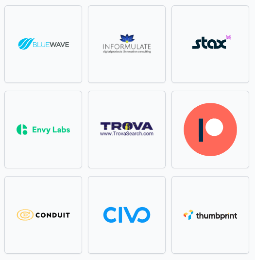

layout: true --- ## Orlando Devops Community Group <img src="https://raw.githubusercontent.com/OrlandoDevs/orlando-developers/master/assets/orlandoDevs-logo-01.png" align="right" width="300"> <br> <br> ## August 2023 - Open Space / Lean Beer Everything <br> <br><br> <br><br> <BR> ### An Orlando Devs Community Group ??? Notes: --- class: inverse ## [Code of Conduct](https://orlandodevs.com/code-of-conduct/) > This code of conduct outlines our expectations for participants within the Orlando Devs community (relevant to both our Slack and Meetup), as well as steps to reporting unacceptable behavior. We are committed to providing a welcoming and inspiring community for all and expect our code of conduct to be honored. Anyone who violates this code of conduct may be banned from the community. ### Our open source community strives to: * Be friendly and patient. * Be welcoming: We strive to be a community that welcomes and supports people of all backgrounds and identities. * Be considerate: Your actions (and words) affect users and colleagues, and you should take those consequences into account. Remember that we’re a very diverse community, so you might not be communicating in someone else’s primary language. * Be respectful: Not all of us will agree all the time, but disagreement is no excuse for poor behavior and poor manners. It’s important to remember that a community where people feel uncomfortable or threatened is not a productive one. * Be careful in the words that we choose: we are a community of professionals, and we conduct ourselves professionally. Be kind to others. Do not insult or put down other participants. Harassment and other exclusionary behavior aren’t acceptable. * Try to understand why we disagree: Disagreements, both social and technical, happen all the time. It is important that we resolve disagreements and differing views constructively. ??? Notes: --- # Thanks to our ODevs Sponsors  --- class: inverse # Today's Agenda <br> * 7:00 - Gathering ( Feel free to be early to grab food, beer, etc.) Put your topics on Post Its. * 7:05 - Official Welcoming Notes and instructions for Openspaces * 7:10 - Round the Room Introductions (30 seconds, name, role and co if want, what are you drinking) * 7:15 - Presentation of Topics * 7:20 - Topic Voting by placing dot / marker / whatnot on the topics you are interested in * 7:25 - Votes are tallied and top ones are assigned a table / area * 7:30 - Session One (2 - 3 topics) * 8:00 - Session Two (2 - 3 topics) * 8:30 - Session Three (2 - 3 topics) * 8:55 - Wrap up / Survey Link * 9:00 - You don't have to go home, but please drive safely!! --- # Open Space Format > Open Space is a process that allows everyone to participate in sessions with others whom they may not normally have a chance to talk with. > Like Agile itself, Open Space Technology sessions operate under a small set of guiding principles. These principles are deceptively simple, yet provide just enough structure for spontaneous discussions: ### Guidelines * Whoever comes are the right people. * Whatever happens is the only thing that could have. * Whenever it starts is the right time. * Whenever it’s over, it’s over. * Wherever it happens is the right place. <br> [More Info on Open Spaces](https://www.agilealliance.org/glossary/open-space) --- class: inverse ## Presentation of Topics <br> ## Voting time --- # Results and Tables <br><br><br> ## Look at the White Board for Topic / Table / Time --- ## Upcoming ODevs Events **Orlando PHP: TALL Tales in PHP** * Tuesday, August 22 7:00 pm - 9:00 pm * Credo Conduit **Cool Developer Talks at ODevs in August** * Thursday, August 31, 2023 * Credo Conduit **Project CodeX Social** * Thursday, September 7, 2023 * Credo Conduit **Orlando DevOps Hackathon** * Saturday, September 9th, 2023 - 11am - 5pm * The Wellborne **Unleashing Innovation in Orlando** * Tuesday, September 19, 2023 * Full Sail Building 3 --- class: inverse ## Thanks for Coming! <br><br> ### Please take a moment to scan the QR code and take our quick survey <br><br> <br> ### How to find us - [LinkedIn](https://www.linkedin.com/groups/12876376/) - [ODevs Slack](https://orlandodevs.com/slack/) ### [Link to this Deck](https://snohio.github.io/devopsorlando/decks/august-23-lean-beer.html) ??? Thanks!!!